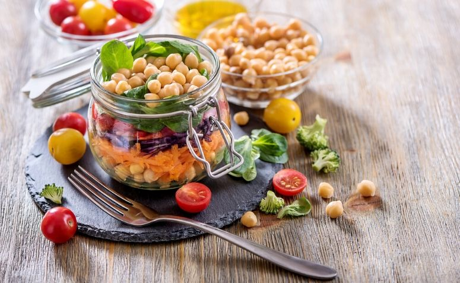

Salada e frango grelhado
INGREDIENTES1 unidade de alface romana
1 xícara de croutons
FRANGO
250 g de peito de frango
sal a gosto
pimenta-do-reino a gosto
1 fio de azeite
MOLHOsuco de 1 limão
1 colher (chá) de mostarda
1 colher (chá) de molho inglês
30 g de parmesão ralado
2 dentes de alho
sal a gosto
pimenta-do-reino a gosto
200 ml de azeite
MODO DE PREPAROTempere o peito de frango com sal e pimenta-do-reino. Cozinhe o peito de frango em uma frigideira com 1 fio de azeite. Fatie o peito de frango e reserve.
Molho:Misture no liquidificador: o suco de limão, a mostarda, o molho inglês, o parmesão ralado, o alho, o sal e a pimenta-do-reino. Bata bem e vá acrescentando o azeite até emulsificar. Lave a alface e sirva com o peito de frango, os croutons e o molho.
Dicas Rápidas
Mesmo se você for consumir frutas e vegetais sem a casca, é importante higienizá-los pois, ao cortar ou morder seus pedaços, microorganismos e sujeira serão transportados para dentro. Algumas pessoas deixam os vegetais de molho em uma bacia de água limpa após o processo de limpeza. Isso não é necessário, o certo é lavar com água corrente.
Com limão
Use 1 limão inteiro cortado em fatias e esprema todo o seu suco em 1 litro de água. Deixe os alimentos de molho e enxágue com água corrente. Atenção: verduras, legumes e frutas delicadas devem ficar de molho por apenas 5 minutos. Os mais resistentes podem ficar de 10 a 15 minutos na solução
Com bicarbonato de sódio
Para higienização com bicarbonato, use 3 colheres de sopa diluídas em 1 litro de água e deixe os alimentos de molho por 15 minutos. Assim como nos outros processos, enxágue cada canto do vegetal com água corrente.
Escovinha
A escovinha é um utensílio de cozinha super prático e que ajuda muito na hora de higienizar a salada corretamente. Lembre-se de deixá-la secar bem antes de guardar e usá-la apenas para limpar os vegetais e frutas.
Donec ullamcorper nulla non metus auctor fringilla. Nulla vitae elit libero, a pharetra augue.
- Vestibulum id ligula porta felis euismod semper.
- Cum sociis natoque penatibus et magnis dis parturient montes, nascetur ridiculus mus.
- Maecenas sed diam eget risus varius blandit sit amet non magna.
Cras mattis consectetur purus sit amet fermentum. Sed posuere consectetur est at lobortis.
Peixe
INGREDIENTES3 quilos de peixe -
pode ser dourado, badejo, vermelho300 mililitros de vinho branco seco
1 vidro de leite de coco
1 xícara de azeite
1 colher de sal temperado com alho
1 cebola grande
5 dentes de alho grande
2 tomates
1 pimentão
Pimenta-do-reino e cominho a gosto
1 maço de cebolinha
1 maço de coentro
Modo de PreparoLimpe o peixe pelas guelras, sem abrir a barriga, lave sem passar limão e reserve num recipiente que possa ir ao forno. Bata no liquidificador todos os outros ingredientes e cubra o peixe com o molho, deixando marinar por 2 horas. Depois cubra com o papel-alumínio e leve ao forno por 20 minutos para assar. Depois retire o papel e deixe dourar. Lembre-se de ir jogando o molho por cima do peixe para criar uma crosta.
Grão-de-bico
INGREDIENTES
1 xícara e meia de grão-de-bico1 dente de alho
1 colher de sobremesa de sal
1 pimentão em cubos
1 tomate em cubos
Ingredientes - Molho
5 colheres de sopa de azeite1 limão espremido
Meia xícara de azeitonas fatiadas
1 cebola picada
2 dentes de alho picados
10 folhas de hortelã picadas
1 colher de chá de sal